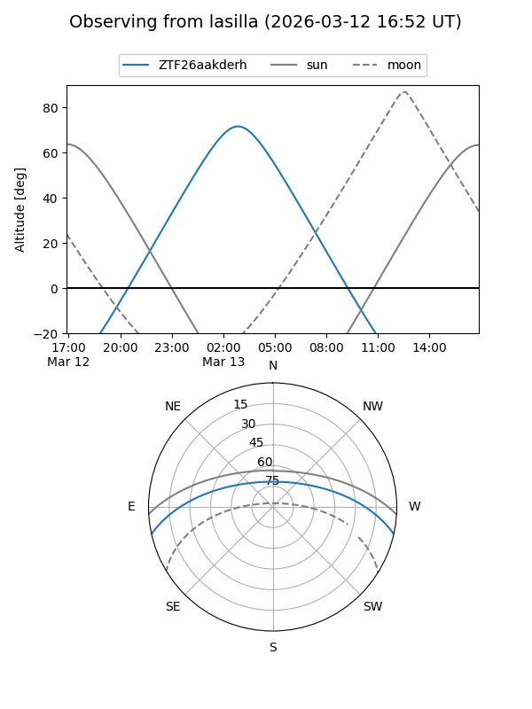
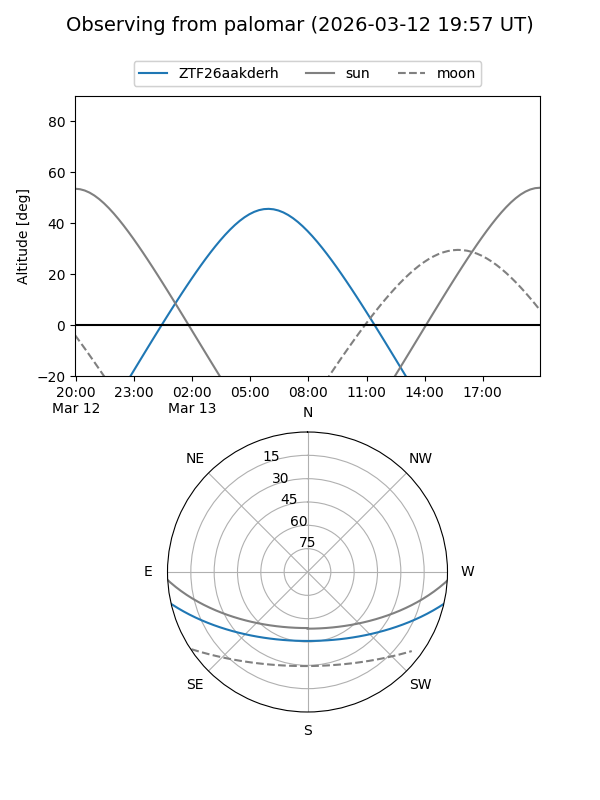

ZTF26aakderh
Target ZTF26aakderh at 2026-03-13 07:50
Aliases and brokers:
FINK: link
Lasair: link
ALeRCE: link
alt names
ZTF26aakderh (ztf,fink_ztf)
Coordinates:
equatorial (ra, dec) = 142.5216,-10.85726
equatorial (HMS+DMS) = 09:30:05.19,-10:51:26.12
galactic (l, b) = (243.8869,+28.16318)
Flags:
Photometry:
last ztfg=18.58
1 ztfg detections
Lightcurve
Visibility


Additional plots